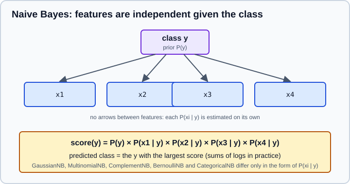

Naive Bayes
|
This content was generated with the assistance of AI and should be verified against the official documentation before being relied on in production. |
Naive Bayes classifiers apply Bayes' theorem under a deliberately simple assumption: the features are independent of each other once the class is known. The assumption is rarely true, yet the classifiers train in one pass over the data, need few examples, handle thousands of features, and have been a strong baseline for text for decades. This page targets NumPy 2.5 and scikit-learn 1.9, was checked in October 2026, and every example was run on Python 3.13.18, NumPy 2.5.4 and scikit-learn 1.9.1. Examples target Python 3.13 or 3.14. Numbers printed in the outputs come from those runs.
The classes are in sklearn.naive_bayes and follow the contract of The Estimator API. Turning text into the count features used below is the subject of Feature Extraction: Text, Dicts & Hashing; judging the result is covered on Metrics & Scoring and Probability Calibration.
The model
For a class y and features x1 ... xn Bayes' theorem gives P(y | x) ∝ P(y) P(x | y). Estimating the joint likelihood P(x | y) needs far too much data when there are many features, so naive Bayes factorises it into one term per feature:
P(y | x1, ..., xn) ∝ P(y) × P(x1 | y) × P(x2 | y) × ... × P(xn | y)
The classifier picks the class with the largest right-hand side (computed as a sum of logarithms, which avoids numerical underflow). Training only estimates the class priors P(y) and, for each feature and class, the parameters of P(xi | y). The five variants differ in the form of that distribution.

| Class | Features it expects | Typical use |
|---|---|---|
|
Continuous values, assumed normal within each class |
Numeric tables; a fast baseline |
|
Non-negative counts (or TF-IDF weights) |
Word counts, document classification |
|
Non-negative counts |
Text with imbalanced classes; an adaptation of the multinomial model |
|
Binary presence or absence ( |
Short documents, binary features; it penalises a missing feature explicitly |
|
Integer category codes |
Categorical tables |
Source: scikit-learn: Naive Bayes
GaussianNB
GaussianNB stores, for each class, the mean (theta_) and variance (var_) of every feature, plus the class priors (class_prior_, the class frequencies unless priors= is given).
import numpy as np
from sklearn.datasets import load_iris
from sklearn.model_selection import cross_val_score, train_test_split
from sklearn.naive_bayes import GaussianNB
X, y = load_iris(return_X_y=True)
X_tr, X_te, y_tr, y_te = train_test_split(X, y, test_size=0.3, stratify=y, random_state=0)
gnb = GaussianNB().fit(X_tr, y_tr)
print("accuracy", round(gnb.score(X_te, y_te), 3))
print("priors", gnb.class_prior_.round(3))
print("class 0 means", gnb.theta_[0].round(2))
print("class 0 variances", gnb.var_[0].round(3))
print(gnb.predict_proba(X_te[:3]).round(3))Output:
accuracy 0.978 priors [0.333 0.333 0.333] class 0 means [5.03 3.42 1.43 0.25] class 0 variances [0.148 0.173 0.027 0.01 ] [[0. 0. 1. ] [0. 0.042 0.958] [1. 0. 0. ]]
Everything the model learned is in those few arrays, so it is easy to inspect. Because it fits a normal curve per class and feature, it works best when features are roughly bell-shaped within each class; skewed features can be transformed first (Scaling & Transforming Features). Scaling is not needed, since each feature is modelled on its own.
var_smoothing
var_smoothing (default 1e-9) adds that fraction of the largest feature variance to every variance. It prevents a division by zero when a feature is constant inside a class and acts as a mild regulariser; the fitted value is stored in epsilon_. A larger value flattens the likelihoods:
for vs in (1e-9, 1e-2, 1, 10):
score = cross_val_score(GaussianNB(var_smoothing=vs), X, y, cv=5).mean()
print(f"var_smoothing={vs:<8} cv accuracy {score:.3f}")Output:
var_smoothing=1e-09 cv accuracy 0.953 var_smoothing=0.01 cv accuracy 0.953 var_smoothing=1 cv accuracy 0.913 var_smoothing=10 cv accuracy 0.900
Source: scikit-learn: GaussianNB
Tune it with a search over a logarithmic grid when the data have outliers or near-constant features, as described on Grid, Randomized & Halving Search.
Learning from batches
All variants implement partial_fit, which updates the statistics with one batch, so data that does not fit in memory can be streamed. The first call must list every class in classes=, because later batches may not contain all of them.
stream = GaussianNB()
for start in range(0, len(X_tr), 30):
stream.partial_fit(X_tr[start:start + 30], y_tr[start:start + 30], classes=np.unique(y))
print("batch-trained accuracy", round(stream.score(X_te, y_te), 3))Output:
batch-trained accuracy 0.978
The batch-trained model matches the one trained at once on this data because the statistics (counts, means, variances) combine exactly. For text, pair partial_fit with HashingVectorizer, which needs no fitted vocabulary.
MultinomialNB and smoothing
MultinomialNB models how often each feature occurs in a class. The likelihood of a feature is its smoothed relative frequency, (count + alpha) / (total + alpha × n_features). alpha (default 1.0, Laplace smoothing) is a pseudo-count added to every feature so that a feature never seen in a class does not get probability zero, which would veto the class for any document containing it.
from sklearn.naive_bayes import MultinomialNB
counts = np.array([[3, 0, 1], [2, 0, 0], [0, 4, 1], [0, 3, 2], [1, 0, 0], [0, 5, 0]])
labels = np.array([0, 0, 1, 1, 0, 1])
for alpha in (0, 1.0):
model = MultinomialNB(alpha=alpha, force_alpha=True).fit(counts, labels)
print("alpha", alpha, model.predict_proba([[0, 0, 1]]).round(3))
print(model.feature_log_prob_.round(2))Output (with alpha=0 the fit emits RuntimeWarning: divide by zero encountered in log):
alpha 0 [[nan nan]] [[-0.15 -inf -1.95] [ -inf -0.22 -1.61]] alpha 1.0 [[0.474 0.526]] [[-0.36 -2.3 -1.61] [-2.89 -0.33 -1.5]]
Without smoothing, feature 2 never occurs in class 0 and feature 1 never in class 1, so their log probabilities are minus infinity and a document containing both has no valid class: the probabilities are nan. With alpha=1.0 every feature keeps some probability. The three arguments that matter:
-
alphais the smoothing amount and a real hyperparameter: values below 1 trust the counts more, larger values pull all classes towards uniform. Tune it with cross-validation. -
force_alpha(added in 1.2) controls what happens to very smallalpha. WhenFalse, a value below1e-10is replaced by1e-10to avoid the numerical error above. Since scikit-learn 1.4 the default isTrue, soalpha=0is used as given. Code written for 1.2 or 1.3 that relied on the silent clipping now needsforce_alpha=False. -
fit_priorandclass_priordecide whether the class prior is learned from the class frequencies (default) or fixed, for example to a uniform prior withfit_prior=False.
The features must be non-negative. Fractional values such as TF-IDF weights work in practice even though the model was derived for counts.
Text classification
The standard recipe is a vectoriser feeding MultinomialNB, in a pipeline so that the vocabulary is learned from the training data only (Pipelines).
from sklearn.feature_extraction.text import CountVectorizer
from sklearn.pipeline import make_pipeline
texts = ["win a free prize now", "free cash offer click now", "limited offer win cash", "claim your free prize",
"meeting moved to monday", "please review the report", "lunch tomorrow with the team", "project report due monday",
"cheap offer free click", "agenda for the team meeting"]
is_spam = np.array([1, 1, 1, 1, 0, 0, 0, 0, 1, 0])
clf = make_pipeline(CountVectorizer(), MultinomialNB(alpha=1.0)).fit(texts, is_spam)
new = ["free prize meeting", "report for monday", "click now to win"]
print(clf.predict(new))
print(clf.predict_proba(new).round(3))
vectorizer, nb = clf[0], clf[1]
names = vectorizer.get_feature_names_out()
log_ratio = nb.feature_log_prob_[1] - nb.feature_log_prob_[0]
print("spam words", [(names[i], round(float(log_ratio[i]), 2)) for i in np.argsort(log_ratio)[::-1][:4]])
print("ham words ", [(names[i], round(float(log_ratio[i]), 2)) for i in np.argsort(log_ratio)[:4]])Output:
[1 0 1]
[[0.158 0.842]
[0.944 0.056]
[0.064 0.936]]
spam words [('free', 1.63), ('offer', 1.41), ('now', 1.12), ('prize', 1.12)]
ham words [('the', -1.37), ('team', -1.08), ('report', -1.08), ('meeting', -1.08)]
The classifier is also interpretable: the difference between the per-class feature_log_prob_ rows ranks the words that push a document towards each class. The toy corpus above only shows the mechanics; a real filter needs thousands of messages. The first message mixes spam and ham words, and the model leans towards spam because free and prize have large log ratios.
For real corpora, TfidfVectorizer often helps, HashingVectorizer avoids a stored vocabulary, and ComplementNB can beat MultinomialNB when classes are imbalanced because it estimates each class’s parameters from the other classes' data. ComplementNB(norm=True) adds the second weight normalisation of the original paper; the default norm=False matches the Mahout and Weka implementations.
Comparing the variants
The variants make different assumptions, so the best one depends on the features. On the 8×8 digit images (pixel intensities 0 to 16) they score as follows:
from sklearn.datasets import load_digits
from sklearn.naive_bayes import BernoulliNB, ComplementNB
Xd, yd = load_digits(return_X_y=True)
candidates = {
"GaussianNB": GaussianNB(),
"MultinomialNB": MultinomialNB(),
"ComplementNB": ComplementNB(),
"BernoulliNB(binarize=8)": BernoulliNB(binarize=8),
}
for name, model in candidates.items():
print(f"{name:<24}", round(cross_val_score(model, Xd, yd, cv=5).mean(), 3))Output:
GaussianNB 0.807 MultinomialNB 0.87 ComplementNB 0.795 BernoulliNB(binarize=8) 0.859
Source: scikit-learn: Naive Bayes
The ranking is specific to this data: pixel intensities behave like counts, so the multinomial model wins, and the digits are balanced, so the complement variant has no advantage. Any of them is a cheap baseline before a stronger model such as the ones on Random Forests & Bagging and Gradient Boosting & HistGradientBoosting.
CategoricalNB
CategoricalNB expects each column to hold integer codes from 0 to the number of categories minus one, so encode strings first, with OrdinalEncoder (see Encoding Categorical Features).
from sklearn.naive_bayes import CategoricalNB
from sklearn.preprocessing import OrdinalEncoder
Xc = np.array([["red", "S"], ["red", "M"], ["blue", "L"], ["blue", "M"],
["green", "S"], ["green", "L"], ["red", "L"], ["blue", "S"]])
yc = np.array([0, 0, 1, 1, 0, 1, 1, 0])
cat = make_pipeline(OrdinalEncoder(), CategoricalNB(alpha=1.0)).fit(Xc, yc)
print(cat.predict([["red", "L"]]), cat.predict_proba([["red", "L"]]).round(3))
codes = OrdinalEncoder().fit_transform(Xc)
try:
CategoricalNB().fit(codes, yc).predict([[3, 0]])
except IndexError as exc:
print("IndexError:", exc)
print(CategoricalNB(min_categories=[5, 5]).fit(codes, yc).predict([[3, 0]]))Output:
[1] [[0.273 0.727]] IndexError: index 3 is out of bounds for axis 1 with size 3 [1]
A category code that was not present in training causes an error at prediction time (the code 3 does not exist among the three training colours). min_categories fixes the number of categories per column in advance, so unseen codes get only the smoothing probability instead of failing. Input containing NaN is rejected, so impute first (Imputing Missing Values).
Why the probabilities are poor
The class ranking of naive Bayes is often good while its predict_proba is not. Features that are correlated are counted several times, so evidence is double-counted and the probabilities are pushed to 0 and 1. The experiment below copies the three informative columns of a synthetic data set four more times, which adds no information, and compares log loss and Brier score (both lower is better), then calibrates the result.
from sklearn.calibration import CalibratedClassifierCV
from sklearn.datasets import make_classification
from sklearn.metrics import brier_score_loss, log_loss
Xb, yb = make_classification(3000, 5, n_informative=3, n_redundant=0, flip_y=0.1, random_state=0)
Xtr, Xte, ytr, yte = train_test_split(Xb, yb, test_size=0.4, random_state=0)
Xtr_dup = np.hstack([Xtr] + [Xtr[:, :3]] * 4)
Xte_dup = np.hstack([Xte] + [Xte[:, :3]] * 4)
def report(name, model, b):
p = model.predict_proba(b)[:, 1]
extreme = ((p > 0.99) | (p < 0.01)).mean()
print(f"{name:<18} acc {model.score(b, yte):.3f} log loss {log_loss(yte, p):.3f} "
f"Brier {brier_score_loss(yte, p):.3f} extreme {extreme:.2f}")
report("original", GaussianNB().fit(Xtr, ytr), Xte)
report("copied 4 times", GaussianNB().fit(Xtr_dup, ytr), Xte_dup)
calibrated = CalibratedClassifierCV(GaussianNB(), method="isotonic", cv=5).fit(Xtr_dup, ytr)
report("copied, calibrated", calibrated, Xte_dup)Output:
original acc 0.651 log loss 0.635 Brier 0.223 extreme 0.01 copied 4 times acc 0.647 log loss 1.081 Brier 0.287 extreme 0.16 copied, calibrated acc 0.648 log loss 0.632 Brier 0.222 extreme 0.02
Accuracy is practically unchanged by the duplication, but log loss rose from 0.635 to 1.081 and 16 percent of the probabilities became extreme. Calibration restored log loss to 0.632. The accuracy is low on this noisy data set (10 percent of the labels are flipped). Treat the probabilities of naive Bayes as scores, calibrate them before using thresholds or expected costs (Tuning the Decision Threshold), and remove redundant features with Feature Selection.
Attributes and methods
-
class_log_prior_(orclass_prior_forGaussianNB),classes_,class_count_andn_features_in_describe the fit. -
feature_log_prob_(multinomial, complement, Bernoulli, categorical) holds the log likelihoods;feature_count_the raw per-class feature counts. -
predict_log_probais more accurate thanlog(predict_proba)for extreme values, andpredict_joint_log_probareturns the unnormalised log joint score of each class. -
fitandpartial_fitacceptsample_weight, so rows can count more or less. -
The estimators work on sparse input except
GaussianNB, which needs dense arrays.
Pitfalls and where older material is outdated
-
Independence is violated. Correlated features inflate confidence; do not use the probabilities uncalibrated.
-
Zero probabilities. Keep
alphaabove 0 unless the data really guarantees every feature appears in every class. -
Negative values. Multinomial, complement and categorical models reject negative input; scalers such as
StandardScalerproduce negatives, so useMinMaxScaler(or no scaler) before them. -
Unseen categories.
CategoricalNBneedsmin_categoriesor a consistent encoder. -
Continuous features in discrete models. Binning with
KBinsDiscretizerturns numbers into categories (Scaling & Transforming Features). -
Older tutorials. Examples that import
sklearn.cross_validationorsklearn.grid_search, or that callCountVectorizerand thenfit_transformon the test set, predate scikit-learn 0.18 or leak the vocabulary; and the default offorce_alphachanged in 1.4.